島根県出雲市平野町921
更新日 : 2025/03/23
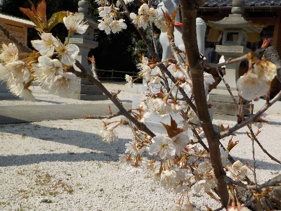
そろそろ桜が咲いているんじゃないかと見に行ったら咲いていました。
小さくても葉っぱがあっても桜はいいですね。
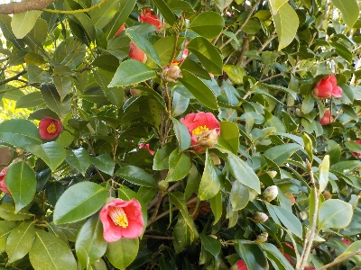
椿も咲いてます。椿はあちこちの神社で見ますね。
更新日 : 2024/10/26
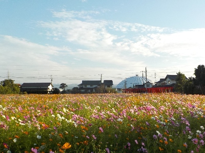
去年もコスモスを見ましたが、今年は更に広くなっていました。
草丈の低いコスモスがびっしりと生えているので見事ですね。観光農園みたいです。
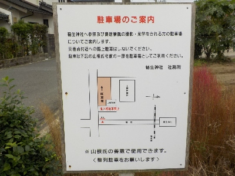
駐車場の案内看板です。近所の方の善意です。ありがたいですね。
2024/10/06
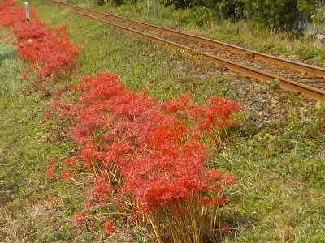
今年はヒガンバナの見頃が10月になりました。
来年、再来年はもっと遅くなったりするのかな。持続可能な開発の影響もあるのかな。
更新日 : 2023/10/22
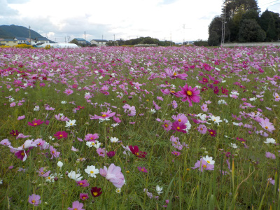
線路脇にコスモス畑ができていました。
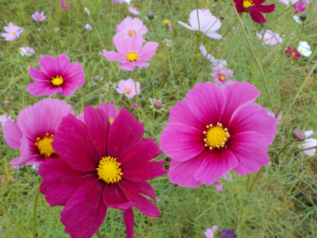
キレイでいいですね。
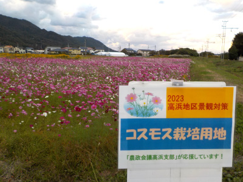
2023高浜地区景観対策 コスモス栽培用地 農政会議高浜地区が応援しています！だそうです。
来年もあるといいですね。
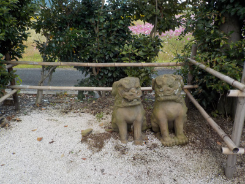
神社の北東に狛犬が並んでいました。
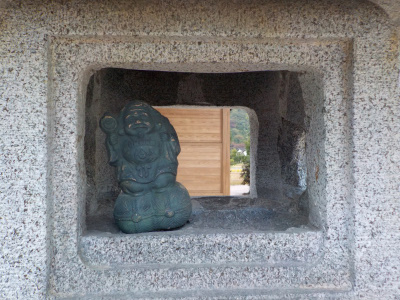
何故か灯篭の中に神様がいらっしゃいました。
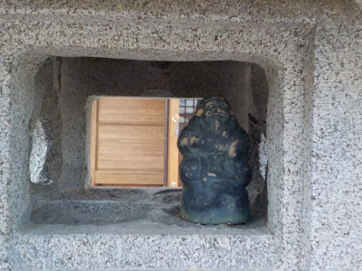
どうしてここにいらしゃるんだろう。
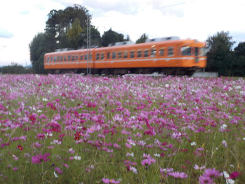
電車の写真を撮りましたが、綺麗に撮れませんでした。
更新日 : 2022/07/24
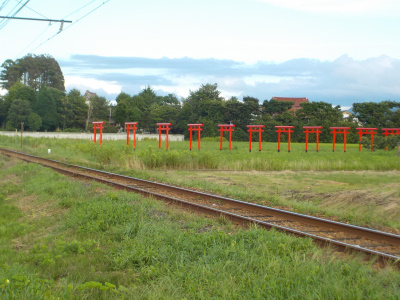
並んでる赤い鳥居が新しくなりました。
カメラを持った人がやって来るんでしょうね。
よくインスタとかにUPしてある写真とは違った場所から写真を撮りました。なんとなく線路見えた方がいいかなー。
【おいしいものを食べよう。】【たくさん寝よう。】
【ソロ活をしよう!】【季節感のあることをしよう。】【動画視聴はほどほどに。】【当サイトの全てのコンテンツは無断転載禁止です。】